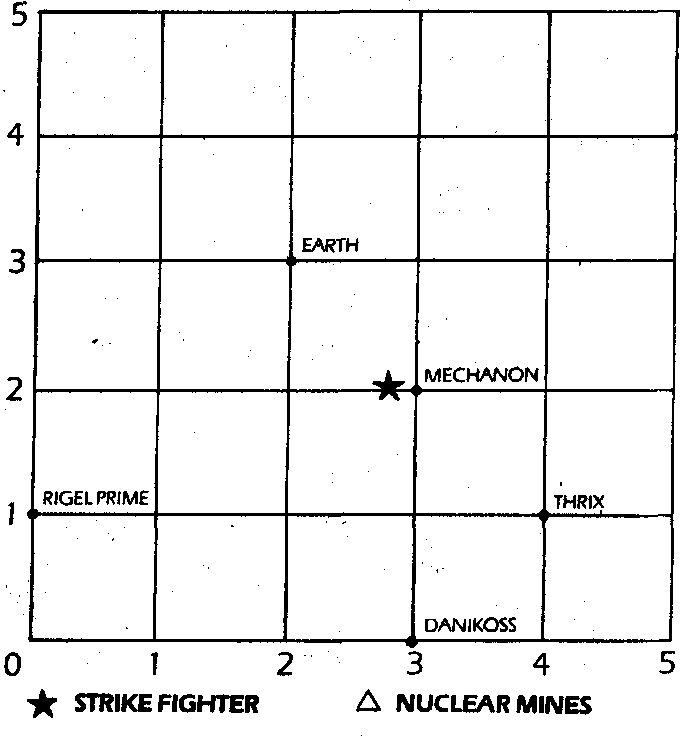

310
Nothing happens. CAIN advises you that you can only move to a point on the grid which corresponds to a timehole. The radiation level is critical. Which coordinates will you try next?
| -2 / 4 / 1 | Turn to 349 |
| 1/ 0/ 0 | Turn to 332 |
| 0/-5/-5 | Turn to 279 |